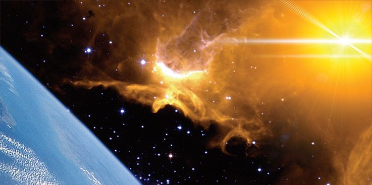

A revista Redbook fez uma pesquisa nos oito principais seminários da América e descobriu que apenas um por cento dos alunos acreditava na segunda vinda de Jesus. A razão para esse ceticismo surpreendente pode ser revelada pela experiência de D. L. Moody, o grande evangelista leigo. Depois de explicar que estava na igreja há quinze anos antes de ouvir seu primeiro sermão sobre o assunto do retorno de Cristo, ele declarou: “Agora eu sei por que o diabo não quer que esse assunto seja pregado. Nada despertaria a igreja tanto quanto a doutrina de que Jesus está voltando em breve.”
Isso também explica por que a igreja moderna está tão estranhamente quieta sobre esse glorioso evento futuro? Satanás teve sucesso em lançar um manto de silêncio sobre a única grande verdade que poderia reviver as igrejas de Laodicéia de hoje? Certamente parece ser o caso. Até mesmo os evangelistas estão dizendo pouco sobre essa ocorrência espetacular que é mencionada 331 vezes somente no Novo Testamento.
Não há evento do passado, presente ou futuro que tenha uma base mais forte para crença. Jesus falou sobre isso com uma clareza tão inconfundível que ninguém precisa ficar em dúvida ou confusão. Ele disse: “Vou preparar-vos lugar. E, se eu for e vos preparar lugar, virei outra vez, e vos receberei para mim mesmo, para que onde eu estiver estejais vós também” (João 14:2, 3).
É biblicamente claro que o plano completo de Deus para este mundo não será cumprido até que sejamos transferidos para aquele lar perfeito que Ele está preparando agora. O plano de salvação fez infinitas provisões para nossa justificação e santificação, mas a restauração de todas as coisas não será realizada até que sejamos libertos para sempre da presença contaminadora do pecado.
Quando e como a segunda entrada de Cristo na história da Terra acontecerá? Antes de responder a essa pergunta, é muito importante entender como isso não acontecerá. Milhões foram enganados por uma incrível variedade de falsas teorias que se espalharam como fogo entre os cristãos evangélicos.
Quando Seus discípulos se aproximaram Dele no Monte das Oliveiras com a pergunta ansiosa “Qual será o sinal da Tua vinda e do fim do mundo?” Cristo respondeu: “Tomai cuidado para que ninguém vos engane.” A implicação é clara de que haverá uma quantidade incomum de informações enganosas sobre Seu retorno.
Então Jesus procedeu a delinear os principais sinais que marcariam Sua segunda vinda. Quase todo Mateus 24 é misturado com advertências sobre o programa do fim dos tempos de Satanás para iludir o mundo inteiro sobre esta questão. De acordo com Jesus, os próprios eleitos serão atacados e ameaçados pelas astutas personificações do maligno. Ele declarou que falsos Cristos e profetas enganadores apareceriam nos últimos dias, operando milagres inegáveis. “Porque surgirão falsos Cristos e falsos profetas, e farão tão grandes sinais e prodígios que, se possível fora, enganariam até os escolhidos” (Mateus 24:24).
Essas fraudes religiosas ousadas fizeram sua aparição? De fato, elas foram anunciadas através das páginas dos jornais mais prestigiados do mundo. Textos publicitários altamente sofisticados proclamaram a aparição iminente da divina “Encarnação” que terá as respostas para todos os nossos problemas.
Embora muitas das alegações de tais charlatões estejam sendo rejeitadas, a comunidade mundial está sutilmente sendo preparada para uma manifestação sobrenatural de um Cristo falsificado. Por causa de sua falta de conhecimento bíblico, milhões de cristãos estarão prontos para receber as alegações espúrias desse impostor descarado.
Jesus declarou que não retornaria a nenhuma área localizada da Terra. “Então, se alguém vos disser: Eis aqui o Cristo, ou ali; não acrediteis. … Portanto, se vos disserem: Eis que ele está no deserto; não saiais; eis que ele está no interior; não acrediteis” (Mateus 24:23–26).
Aqueles que são bem versados nas verdades da Bíblia não podem ser varridos pela histeria massiva que marcará a tentativa de Satanás de personificar o advento de Jesus. Quando comentaristas de noticiários populares de televisão anunciam, com grande entusiasmo, que Cristo apareceu em Londres, Nova York ou Roma, a vasta maioria dos ouvintes acreditará que é verdade.
Se você sente que seria isolado do engano, imagine-se na presença de tal personagem. Talvez você tenha corrido para a cena para expor o astuto pretendente, mas não está preparado para a realidade impressionante que o aguarda. Um ser majestoso, vestido com uma túnica brilhante, eleva-se acima de todos os milhares que tentam se aproximar dele. Uma tremenda aura de poder circula em torno da figura semelhante a Cristo. Ele fala no mesmo tom gentil que você imagina que Jesus usou quando estava na Terra. Você observa com espanto enquanto ele estende a mão para tocar os cegos, coxos e doentes que se prostram diante dele. Instantaneamente, eles parecem ser curados de toda enfermidade e fraqueza. O grito sobe de centenas de vozes: "Jesus veio!" Você é estranhamente afetado pelas ondas de emoção alegre que parecem imergir a multidão adoradora que enche as ruas.
Então, suponha que esse nobre benfeitor proclame que ele é de fato o Messias que retornou para retomar seu trabalho de cura e pregação. Quão fácil seria resistir ao impulso de aclamá-lo como o Filho de Deus? A evidência dos seus sentidos físicos seria esmagadora.
Por que o mundo inteiro poderia ser capturado por uma demonstração tão deslumbrante? Porque há uma resposta natural em cada ser humano ao incomum e ao espetacular. As pessoas irão a qualquer lugar, a qualquer custo, para testemunhar um milagre prometido. Satanás explorará essa fraqueza carnal para sua própria vantagem. Não é de se admirar que os próprios eleitos corram o risco de serem enganados.
Agora que sabemos como Jesus não retornará, vamos descobrir como Sua vinda realmente acontecerá. Nossa única segurança é entender a verdade como ela é revelada na Bíblia.
Dois anjos vieram do céu para dar a declaração mais clara já registrada sobre a maneira do retorno de Cristo. As circunstâncias daquele momento dramático não deixam espaço para discussões sobre o que eles queriam dizer: “E, dizendo ele estas coisas, foi levado para cima, enquanto eles olhavam, e uma nuvem o recebeu, ocultando-o a seus olhos. E, estando eles com os olhos fitos no céu, enquanto ele subia, eis que junto deles apareceram dois varões vestidos de branco, os quais lhes disseram: Varões galileus, por que ficais aí olhando para o céu? Esse Jesus, que dentre vós foi recebido em cima no céu, há de vir assim como para o céu o vistes ir” (Atos 1:9–11).
Cinco palavras coloridas nesses versículos indicam, sem sombra de dúvida, que a ascensão de Jesus foi um evento muito real — contemplado, visto, olhado, contemplado e visto. Este não foi um sonho ou visão mística. Eles estavam literalmente observando nosso Senhor com seus olhos físicos enquanto Ele desaparecia no céu distante. Disseram os anjos: “Este mesmo Jesus … virá da mesma maneira como o vistes ir.”
Seu retorno será tão visível e literal quanto Sua partida. Já que Ele partiu em uma nuvem, Ele também deve retornar em uma nuvem. As Escrituras confirmam isso? João escreveu: “Eis que vem com as nuvens, e todo olho o verá” (Apocalipse 1:7).
Em poucas palavras, o revelador revela um dos fatos mais surpreendentes sobre o advento de Cristo. Ele será visto por toda alma viva no mundo enquanto Ele gradualmente desce pelos céus atmosféricos. Os bons e maus habitantes de todas as nações da Terra olharão juntos para cima e contemplarão a glória de Seu séquito enchendo o céu. Jesus descreveu desta forma: “Então aparecerá no céu o sinal do Filho do homem, e todas as tribos da terra se lamentarão, e verão o Filho do homem vindo sobre as nuvens do céu, com poder e grande glória” (Mateus 24:30).
O homem e os demônios podem ser capazes de falsificar muitos aspectos de Sua vinda, mas não serão capazes de duplicar a maneira de Sua entrada celestial em nossa atmosfera. Em nenhum momento ou lugar tanta glória e grandeza serão expostas aos olhos do homem. Somos informados em Mateus 25:31 que “todos os santos anjos” estarão presentes quando Ele vier. De acordo com João, o Revelador, há muitas vezes mais do que cem milhões de anjos no céu e todos eles estarão com Ele quando Ele retornar. “E o número deles era dez mil vezes dez mil, e milhares de milhares” (Apocalipse 5:11).
Em algumas ocasiões, anjos solitários apareceram aos seres humanos na força de sua glória celestial e os resultados foram devastadores. Um anjo feriu o exército assírio durante a noite e 185.000 estavam mortos na manhã seguinte (2 Reis 19:35). Multiplique esse tipo de glória por algumas centenas de milhões e você pode imaginar o brilho do advento.
Será visível para todas as pessoas vivas no mundo? Jesus disse: “Porque, assim como o relâmpago sai do oriente e brilha até o ocidente, assim será também a vinda do Filho do homem” (Mateus 24:27). Não é de se admirar que todas as tribos e povos serão audiências dessa visão espetacular. Assim como um vívido clarão de relâmpago em uma noite escura penetra em todos os cantos para que ninguém possa se esconder dele, assim será Sua vinda. A terra será iluminada de um horizonte a outro.
Já podemos ver que os eventos finais não serão feitos em um canto em algum lugar. Além de serem altamente visíveis, haverá alguns sons muito altos associados à segunda vinda de Cristo. Paulo escreveu: “Porque o mesmo Senhor descerá do céu com alarido, e com voz de arcanjo, e com a trombeta de Deus, e os que morreram em Cristo ressuscitarão primeiro” (1 Tessalonicenses 4:16).
Essa poderosa demonstração de visão e som será tal que até os mortos serão despertados de suas camas empoeiradas. O grito, a voz e a trombeta serão audíveis para todas as criaturas sob o sol. Eu nunca toquei trombeta pessoalmente, mas meus dois filhos tentaram aprender a arte quando eram crianças. Só posso dizer uma coisa sobre trombetas com absoluta certeza: elas não são silenciosas! Trombetas foram feitas para serem tocadas e ouvidas.
Haverá outros fenômenos globais para marcar o fim do tempo como o conhecemos? Sim, também haverá um terremoto mundial convulsivo, mais destrutivo do que qualquer outro já visto antes. “E houve vozes, e trovões, e relâmpagos; e houve um grande terremoto, qual nunca houve desde que há homens sobre a terra, um terremoto tão forte e tão grande. … E todas as ilhas fugiram, e os montes não foram achados” (Apocalipse 16:18–20).
Imagine o terror universal que acompanhará as ondas de choque que farão com que ilhas habitadas desapareçam no mar. Enormes cadeias de montanhas serão despedaçadas em fragmentos, de acordo com a linguagem gráfica do profeta.
À medida que o quadro se desenrola, torna-se cada vez mais aparente que o retorno de nosso Senhor será o evento mais cataclísmico que já ocorreu. Nenhuma pessoa no mundo será capaz de se esconder dele. Os ímpios, em particular, serão profundamente afetados pela aproximação de uma miríade de seres celestiais enquanto eles escoltam Jesus em direção à Terra. João descreveu como eles tentarão evitar a presença dAquele a quem rejeitaram e negaram.
“E o céu recolheu-se como um livro que se enrola; e todos os montes e ilhas foram removidos dos seus lugares. E os reis da terra, e os grandes, e os ricos, e os tribunos, e os poderosos, e todo o servo, e todo o livre, se esconderam nas cavernas e nas rochas das montanhas; E diziam aos montes e aos rochedos: Caí sobre nós, e escondei-nos da face daquele que está assentado sobre o trono, e da ira do Cordeiro; Porque é vindo o grande dia da sua ira; e quem poderá subsistir?” (Apocalipse 6:14–17).
À medida que Cristo retorna para executar o julgamento sobre a terra, Sua presença é um fogo consumidor sobre todo pecado e pecadores. Os ímpios tentam escapar para as cavernas das montanhas e rezam para serem apagados da existência em vez de encarar um Deus santo. Intenso e terrível é seu senso de vergonha e medo.
Paulo acrescenta informações sobre o destino final daqueles que não estão prontos para a vinda de Cristo: “E a vós, que sois atribulados, descanso conosco, quando o Senhor Jesus se manifestar do céu com os anjos do seu poder, em chama de fogo, tomando vingança dos que não conhecem a Deus e dos que não obedecem ao evangelho de nosso Senhor Jesus Cristo; Os quais, sofrendo, sob castigo, perdição eterna, banidos da face do Senhor e da glória do seu poder, quando ele vier para ser glorificado nos seus santos” (2 Tessalonicenses 1:7–10).
Ao mesmo tempo em que os justos são glorificados, os que rejeitam Sua graça serão mortos pelo brilho de Sua presença.
Esta revelação interessante nos coloca cara a cara com um engano massivo que tem enganado milhões de cristãos. Obviamente, não haverá nada secreto sobre o arrebatamento dos santos, e o chamado “arrebatamento secreto” é apenas uma invenção da imaginação. Acabamos de ler a clara declaração bíblica de que os ímpios são tratados ao mesmo tempo em que os justos recebem a imortalidade.
Não há absolutamente nenhuma indicação bíblica de que o retorno de Cristo ocorra em duas fases. O conceito popular de que Jesus vem secretamente sete anos antes do fim do mundo para arrebatar as pessoas boas não tem suporte bíblico algum. Os ímpios não continuam vivendo na Terra por sete anos após o arrebatamento mítico dos justos. Eles são mortos, diz Paulo, “Quando ele (Jesus) vier para ser glorificado em seus santos”.
Recentemente, chegou à minha mesa uma maquete de um jornal que supostamente representaria os flashes de notícias típicos no dia seguinte ao arrebatamento. Estava cheio de histórias de horror e imagens além da descrição. Acidentes terríveis foram relatados como tendo ocorrido simultaneamente ao redor do mundo, matando milhares de pessoas. Enquanto milhões de cristãos desapareciam repentinamente sem deixar rastros, carros sem motorista e aviões sem piloto saíam do controle. O jornal trazia muitos artigos sobre crianças pequenas que aparentemente desapareceram no ar enquanto estavam a caminho da escola. Somente os espiritualmente descuidados e descomprometidos foram deixados para trás para juntar os pedaços de uma sociedade destruída.
Que perversão da verdade! Os ímpios também verão Cristo quando Ele vier. Paulo diz que Ele “aparecerá pela segunda vez”, e Pedro declarou: “Quando o Sumo Pastor aparecer” (Hebreus 9:28; 1 Pedro 5:4). Se Sua vinda fosse secreta ou invisível, deveria estar escrito que Ele não apareceria. Quando Paulo e seus companheiros sofreram uma tempestade no mar e as nuvens estavam escuras e baixas, ele descreveu como “quando nem o sol nem as estrelas apareceram por muitos dias” (Atos 27:20). Aparecer é ser visto. Jesus aparecerá ou não quando Ele vier? Muitos versículos dizem que Ele aparecerá. Podemos confiar na Bíblia ou devemos dar algum significado estranho e distorcido à palavra “aparecer” para apoiar o que queremos acreditar?
Estou convencido de que a confusão foi em grande parte resultado da má interpretação de duas frases que Jesus usou ao descrever Sua vinda. E o interessante é que Ele deu uma explicação tão clara das frases que dificilmente uma mente sem preconceitos poderia ser enganada.
Agora, vamos dar uma olhada mais de perto, no contexto, nas duas expressões de nosso Senhor que foram usadas para dar suporte a um arrebatamento secreto — "como um ladrão na noite" e "um levado e o outro deixado". Se estivermos dispostos a aceitar a definição bíblica dos termos, não pode haver ambiguidade sobre o que Jesus disse.
O que Ele quis dizer quando disse que Sua vinda seria como um ladrão na noite? Ele explicou cuidadosamente em Mateus 24:42–44: “Vigiai, pois, porque não sabeis em que hora há de vir o vosso Senhor. Sabei, porém, isto: se o dono da casa soubesse a que vigília da noite havia de vir o ladrão, vigiaria e não deixaria minar a sua casa. Por isso, estai vós também apercebidos, porque numa hora em que não penseis, virá o Filho do homem.”
Aí está! Tão simples que uma criança pode entender. Será inesperado. O advento pegará o mundo de surpresa. Sua vinda explodirá sobre esta terra quando as pessoas menos esperarem. Elas estarão tão despreparadas para isso quanto estariam para um ladrão da meia-noite. Essas palavras não transmitem a menor ideia de que nosso Senhor virá sorrateiramente como um criminoso comum. Ele estava apenas usando uma ilustração impressionante da imprevisibilidade de Seu retorno. Jesus reforçou o ponto que Ele estava fazendo no versículo 50: “O senhor daquele servo virá num dia em que ele não o espera, e numa hora que ele não sabe.”
Pedro usou exatamente as mesmas palavras ao descrever a vinda de Cristo. Ele disse: “Mas o dia do Senhor virá como o ladrão de noite, no qual os céus passarão com grande estrondo, e os elementos se derreterão ardendo” (2 Pedro 3:10). Este versículo sozinho contém todas as evidências que poderíamos desejar sobre o significado do termo disputado. Quando Jesus vier como um ladrão, Pedro diz, os céus passarão com grande estrondo. Isso poderia ser secreto? Isso retrata o arrebatamento silencioso de milhões de pessoas enquanto outras estão totalmente inconscientes do que está acontecendo? É exatamente o oposto disso. Esse grande estrondo corresponde ao grito e à trombeta da epístola de Paulo — um som tão intenso que até os mortos são despertados.
O mais incrível é como as pessoas pegaram versículos tão óbvios e os distorceram fora do contexto para apoiar uma doutrina que nem mesmo aparece na Bíblia. A mesma coisa foi feita com a ilustração de duas mulheres moendo juntas. Jesus disse: “Uma será tomada e a outra deixada”, mas o que o contexto nos diz sobre o significado dessas palavras? Há alguma indicação de que Jesus estava ensinando um arrebatamento secreto dos santos?
As palavras em questão são encontradas em Lucas 17:24–27, mas vamos ler os versículos antes e depois para entender o quadro completo. Começando no versículo 26, Jesus comparou Sua vinda aos dias de Noé: “E como foi nos dias de Noé, assim será também nos dias do Filho do homem. Comiam, bebiam, casavam e davam-se em casamento, até o dia em que Noé entrou na arca, e veio o dilúvio e os destruiu a todos.”
A semelhança é inquestionável. Antes do dilúvio, alguns foram levados e alguns foram deixados. Os levados foram levados para a arca e salvos. Os que foram deixados foram todos destruídos pela água furiosa.
Cristo continuou Seu discurso com outra ilustração. “Da mesma forma também aconteceu nos dias de Ló: comiam, bebiam, compravam, vendiam, plantavam e edificavam; Mas no dia em que Ló saiu de Sodoma choveu do céu fogo e enxofre, e os destruiu a todos. Assim será no dia em que o Filho do homem se há de manifestar” (Lucas 17:28–30).
Novamente, o paralelo é óbvio. Alguns foram tirados da cidade para a segurança e alguns foram deixados. O que aconteceu com aqueles que foram deixados? Todos foram destruídos pelo fogo.
Agora chegamos aos versículos 34–36: “Eu vos digo que naquela noite estarão dois homens numa cama; um será levado, e o outro deixado. Duas mulheres estarão moendo juntas; uma será levada, e a outra deixada. Dois homens estarão no campo; um será levado, e o outro deixado.”
Por favor, mantenha a continuidade da ilustração anterior de Cristo em mente ao considerar essas palavras. Em todos os casos, houve uma separação dos bons dos maus, e então os maus foram mortos. Se o contexto nos ensina alguma coisa, devemos concluir que aquele que for deixado será deixado morto, assim como foi nos dias de Noé e Ló. E quando lemos o próximo versículo, não pode haver dúvida de que é exatamente isso que Jesus estava dizendo. “E eles responderam e disseram-lhe: Onde, Senhor? E ele lhes disse: Onde estiver o corpo, ali se ajuntarão as águias” (Lucas 17:37).
Depois que Jesus disse que um seria levado e o outro deixado, os discípulos perguntaram onde eles seriam deixados. Sua resposta revela claramente que todos os que foram deixados estariam mortos. Seus corpos seriam comida para as águias devorarem. Isso está em perfeita harmonia com o que o resto da Bíblia diz sobre o assunto.
Não há a menor sugestão de que essa separação final dos salvos e perdidos será feita de forma secreta. No entanto, essa conotação tem sido aplicada por aqueles que estão desesperadamente tentando encontrar apoio inspirado para uma tradição vazia. A vinda não bíblica de duas fases tem sido repetida com tanta frequência e persistência que milhões acreditam que deve ser verdade. Provavelmente não há distorção doutrinária mais perigosa no mundo do que essa, porque ela poderia iludir a maioria dos cristãos professos e fazê-los se perder. Não é de se admirar que Jesus tenha alertado: “Tomai cuidado para que ninguém vos engane.”
A fundação da teoria do arrebatamento foi lançada há mais de 400 anos sob ordens específicas da Igreja Católica. Todo cristão precisa entender como essa fabricação de erro foi projetada para neutralizar a grande Reforma Protestante. Se os fatos da história fossem conhecidos pelos protestantes de hoje que defendem com tanta emoção a teoria do arrebatamento e a doutrina futurista do anticristo, eles ficariam horrorizados.
Lutero e seus companheiros reformadores identificaram corajosamente o papa como o “homem do pecado” e rotularam a Igreja Católica como o anticristo da profecia. Em resposta a essas acusações, a hierarquia designou dois padres jesuítas para desenvolver contrainterpretações que desviariam o ônus da Igreja Católica. Apesar do fato de que os dois homens fundaram escolas opostas de interpretação, suas teorias sobreviveram para formar a base da maioria da teologia protestante moderna hoje. Eles não apenas efetivamente atenuaram a avaliação de Lutero do papado como o anticristo, mas também habilmente dividiram e diluíram o “protesto” de todas as igrejas que surgiram do movimento da Reforma.
Observadores religiosos modernos ficaram atônitos em janeiro de 1984, quando homens como Billy Graham e Jerry Falwell aceitaram e defenderam humildemente o estabelecimento de laços políticos dos Estados Unidos com o Vaticano. Por que esses famosos porta-vozes protestantes não viam perigo em se aliar à Igreja de Roma? Porque eles são enganados, junto com milhões de outros, pelas teorias inventadas pelos católicos desses dois padres que quase eclipsaram a posição histórica e bíblica dos reformadores. Se os descendentes espirituais de Lutero e Wesley agora tivessem a mesma doutrina que eles ensinavam, nenhum luterano ou metodista favoreceria qualquer tipo de aliança com o papado hoje.
Agora vamos dar uma olhada nesses dois padres espanhóis que inundaram o século XVI com sua propaganda contrarreformadora.
Alcazar de Sevilha aplicou todas as profecias da besta a Antíoco Epifânio, que viveu muito antes dos papas começarem a governar em Roma. Seu sistema de interpretação veio a ser conhecido como a Escola Preterista de profecia.
Por outro lado, o jesuíta Francisco Rivera inventou um sistema conhecido como Escola Futurista de interpretação. Ele ensinou que o anticristo seria um futuro super-homem que apareceria perto do fim dos tempos e continuaria no poder por três anos e meio. É sua teoria inteligente e antibíblica que foi ressuscitada pelos modernos cristãos protestantes evangélicos. E hoje milhões de batistas, metodistas, pentecostais, etc., sustentam essa mistura antiprotestante dos jesuítas como algum tipo de doutrina infalível. No entanto, essas mesmas denominações afirmam ser fiéis apoiadores da teologia protestante. Lutero e outros firmes manifestantes contra os erros católicos ficariam surpresos se fossem repentinamente ressuscitados para ouvir o que está sendo ensinado em nome do protestantismo.
No início dos anos 1800, a visão futurista do jesuíta Rivera passou por certos refinamentos e adições, incluindo a tribulação de sete anos e o arrebatamento dos santos. Pela primeira vez, foi adotada por professores protestantes que buscavam formas de reconciliação com Roma. Por meio da influência e dos escritos de John Nelson Darby, da Igreja dos Irmãos de Plymouth, na Inglaterra, a nova doutrina se espalhou para os Estados Unidos. Durante meados e o final do século XIX, recebeu seu maior impulso de Cyrus Scofield, que a incorporou às notas de sua Bíblia de Referência Scofield publicada em 1909.
Agora nos voltamos para o aspecto mais emocionante deste assunto. Por que Jesus retornará a esta terra pela segunda vez? João foi inspirado a escrever a resposta nas palavras exatas de nosso Senhor: “E eis que cedo venho, e o meu galardão está comigo, para retribuir a cada um segundo a sua obra” (Apocalipse 22:12).
Após longos e opressivos milênios de sofrimento, o povo de Deus finalmente será liberto da escravidão da influência maligna de Satanás. A marca de seu poder está gravada nos cemitérios da terra e nos memoriais de guerra dos mortos. Os gritos e lágrimas dos santos se filtraram por todos os anos de cada geração desde que Adão pecou. Que dia será quando a maldição da transgressão for levantada, e o mais temido de todos os inimigos humanos for eternamente banido.
Paulo descreveu isso com estas palavras: “Porque o mesmo Senhor descerá do céu com grande brado, e com voz de arcanjo, e com a trombeta de Deus, e os que morreram em Cristo ressuscitarão primeiro. Depois nós, os que ficarmos vivos, seremos arrebatados juntamente com eles, nas nuvens, ao encontro do Senhor nos ares, e assim estaremos para sempre com o Senhor” (1 Tessalonicenses 4:16, 17).
A recompensa que Cristo traz consigo tem tantas facetas que nenhuma língua na terra poderia retratá-la adequadamente, mas a ressurreição dos justos mortos será o grande foco daquele momento. Alguns que estão dormindo há séculos acordarão como de uma noite de sono sem sonhos. Para outros, será o primeiro momento na memória livre da pulsação abrasadora da dor. Os olhos dos cegos serão abertos para contemplar com espanto os rostos imortais de entes queridos que antes eram reconhecidos apenas pelo toque ou pelo som.
Paulo descreve a mudança de fração de segundo que colocará para sempre os santos além do alcance da dor ou da morte: “Eis aqui vos digo um mistério: Na verdade, nem todos dormiremos, mas todos seremos transformados, Num momento, num abrir e fechar de olhos, ante a última trombeta; porque a trombeta soará, e os mortos ressuscitarão incorruptíveis, e nós seremos transformados. Porque é necessário que isto que é corruptível se revista da incorruptibilidade, e que isto que é mortal se revista da imortalidade” (1 Coríntios 15:51–53).
À medida que os ressuscitados se erguem para encontrar Jesus no ar, todos os justos vivos são instantaneamente transladados para o mesmo corpo de jovens imortais. Os pés de Jesus não tocarão a terra naquele momento, mas todos os redimidos serão arrebatados para encontrá-Lo enquanto Ele desce.
Esse encontro no espaço certamente será o momento mais extático e emocionante na longa história do planeta Terra. Não é de se admirar que tanto da Bíblia esteja repleta de descrições brilhantes desse evento climático no tempo.
A maioria dos cristãos realmente entende a natureza da vinda de Cristo e como ela afetará os habitantes da Terra? Deixe os fatos falarem por si mesmos. A maioria das igrejas aceitou as alegações dos arrebatadores, que rejeitaram a visão histórica em favor desses erros revisionistas recentes. Como resultado, milhões de membros contemporâneos da igreja estão procurando por eventos que nunca acontecerão.
Para inúmeros outros, o retorno de nosso Senhor é um assunto de grande medo e consternação. O cristão nominal (que representa a maioria) tem sentimentos muito mistos sobre o evento, em grande parte porque lhe falta a segurança pessoal de estar pronto para encontrá-Lo.
É essa falta de preparação que criou uma atitude tão confusa em relação ao retorno do nosso Senhor. Muitos não sabem se querem vê-Lo ou não. Que comentário triste sobre o estado da igreja moderna! Por que não deveríamos estar ansiosos para ver Aquele que amamos — Aquele que morreu por nós? Todo verdadeiro cristão deveria estar animado com Sua vinda. Deveríamos falar sobre isso, cantar sobre isso e pregar sobre isso! Como Paulo disse, deveríamos amar Sua aparição. É a bendita esperança de todo filho de Deus.
Minha mãe era uma cozinheira maravilhosa e, sem dúvida, ela fazia o melhor bolo de chocolate que já foi assado. Quando criança, eu a observava juntar as camadas e, em seguida, aplicar a cobertura deliciosa no topo e nas laterais. O ponto alto era quando minha mãe me deixava lamber a forma ou limpar toda a cobertura que havia grudado na forma.
Às vezes, infelizmente, não sobrava muito, mas eu sempre conseguia raspar pelo menos uma colherada. Então eu olhava com desejo para toda aquela cobertura deliciosa no bolo enquanto ela lentamente se acomodava no lugar. Muitas vezes, era tão pesada nas laterais que a cobertura caía e se acumulava no prato. Era sempre a tentação mais terrível para mim limpar todo aquele excesso de cobertura no meu dedo, mas a mãe tinha dado instruções muito específicas para não fazer isso.
Meu verdadeiro teste veio no dia em que mamãe me deixou sozinha em casa com um bolo grande e lindo bem no meio da mesa. Estava recém-decorado, e eu observei fascinada enquanto a cobertura espessa de chocolate escorria quase imperceptivelmente em direção ao fundo do bolo. Finalmente, parecia quase pronta para transbordar da borda do prato, e eu não consegui mais resistir. Cuidadosa e limpamente, deslizei meu dedo ao redor da borda do prato, acumulando um bocado da cobertura proibida.
Então, de repente, ouvi passos na varanda, e antes que eu pudesse descartar as evidências, a mãe estava na sala. Sem nenhuma reserva, posso garantir que não queria ver minha mãe chegar naquele momento. E acredito que essa é a razão pela qual muitos têm medo de ver Jesus chegar — suas mãos estão cheias de guloseimas roubadas deste mundo.
Não se engane sobre isso. Haverá algumas mudanças dramáticas quando Ele aparecer. Os velhos lugares familiares desaparecerão e nada que conhecemos agora será afetado por esse evento. Algumas pessoas temem as mudanças, mas esses medos são infundados. Tudo será melhor e mais maravilhoso do que jamais conhecemos ou imaginamos. Um momento na presença de Jesus compensará todo o sofrimento e abnegação de uma vida na Terra.
Deus retornará a família humana ao ideal sem pecado que Ele projetou desde o princípio. Todos os quatro dons originais de Deus ao homem serão restaurados, incluindo as condições perfeitas do paraíso do Éden. Mas haverá uma tremenda diferença entre a qualidade de vida no novo Éden e no antigo. Adão recebeu apenas uma concessão condicional de imortalidade, enquanto os redimidos receberão um acesso absoluto e incondicional à vida de Deus. E mesmo que o poder de escolha permaneça, nenhum desses santos imortalizados jamais escolherá desobedecer a Deus novamente. Por causa da demonstração do caráter de Deus e do caráter de Satanás, conforme revelado na controvérsia secular, o universo estará seguro de qualquer rebelião ou desobediência posterior. Todo ser criado verá os resultados de tal curso, e nenhum escolherá repetir o doloroso experimento.
É essa perspectiva de segurança eterna que torna a vinda de Jesus uma doutrina tão gloriosa. O mundo está farto de planos de paz fragmentados, tratados quebrados e esperanças frustradas. A humanidade anseia por uma paz onde o medo e a incerteza serão completamente eliminados. A vinda de Cristo porá fim a tudo que poderia produzir ansiedade humana. Pobreza, doença, guerra e morte são as fontes mais comuns de estresse, e essas condições deixarão de existir quando Ele retornar.
Mas a perspectiva mais emocionante de todas é saber que veremos o rosto de Jesus e habitaremos em Sua presença por toda a eternidade. Certamente esse momento será o clímax de todas as mais queridas esperanças e sonhos que já acalentamos. Que a preparação para isso seja o foco de todos os nossos pensamentos e ações. E Deus nos livre de passar qualquer dia em que não oremos com desejo ardente pela vinda do nosso Senhor em breve.